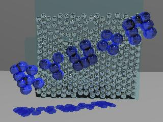

RYUON
is a Particle Simulation Suite
†
RYUON|
documents|
stokes|
libstokes
libiter|
twobody
News|
What?|
download|
Links|
History

RYUON is a Particle Simulation Suite.
My scientific interest is on "particles in a fluid"
or between "discrete and continuous systems".
RYU of RYU-ON has meanings of
"grain" and "flow"
in Japanese and it well fits my interest, the GAP between the two.
I am planning to release the following codes and data:
- Simulators
- [stokes]Stokesian dynamics:
massless particles in a viscous fluid
- Fluidized Beds Simulator:
heavy particles in a viscous fluid
- Libraries
- [libstokes]library for Stokesian dynamics
- Brady & Bossis, Annu.Rev.Fluid Mech. 1988, Vol.20 pp.111-157,
Durlofsky & Brady, J.Fluid Mech. 1987, Vol.180 p.21,
Brady, Phillips, Lester, & Bossis,
J.Fluid Mech. 1988, Vol.195 pp.257-280.
- Ichiki, J.Fluid Mech. 452 (2002) pp. 231-262.
- [libiter]library of iterative solvers
for the linear set of equations
- Data and Details
- [twobody]
The exact solutions for two-body problems in Stokes flows
- Jeffrey & Onishi, J.Fluid Mech. 1984, Vol.139 pp.261-290,
Jeffrey, Phys. Fluids A 1992, Vol.4, pp.16-29,
Jeffrey, Morris, Brady, Phys. Fluids A 1993, Vol.5, pp.2317-2325.
- Utilities: Analysis and Visualization
- Molecular dynamics:
utility for existing OpenSource Projects
such as
GROMACS and
TINKER
- Future Plans
- Solver for General Many-Body Problems:
including electrostatics, gravitational systems,
elastisity, vortex dynamics, etc
- FEM, BEM layer using the above.
please visit File Releases @ SF.
- Sep 27, 2006
- Sep 26, 2006 : libstokes
and libiter web pages are up.
CVS will be ready soon.
- Sep 24, 2006 : twobody web page
(in preliminary version) is added.
- Sep 22, 2006 : start this page.
The image is generated by POV-Ray.
Here's the source:
{kind=link}
{kind=link}